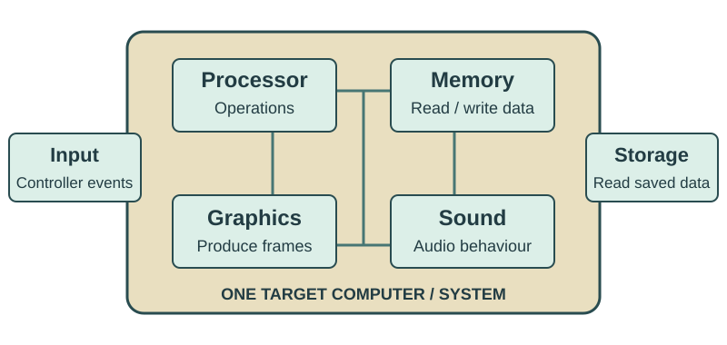

Emulation
How can one computer behave like another?
- Explain the roles of host, target and emulator
- Explain what an emulator has to recreate
- Explore real-world uses of emulation
- Evaluate performance and compatibility trade-offs
01 · Emulation
Software expects a computer you do not have
A 1990s game expects the machine it was written for.
What the game expects
Old CPU · graphics · sound · wired controller
What you have

Different CPU · modern graphics · current OS · USB input
Why can’t the laptop necessarily just run it?
Revision notes
A platform is the combination of hardware and operating environment a program expects. The operating system (OS) helps programs use hardware. A faster or newer machine is not automatically compatible: the program may depend on behaviours that the new machine does not provide. The game shown is fictional.
02 · Emulation
Could software imitate the missing machine?
Old game
↓ expects: the old computer’s behaviour
EMULATOR
Recreates the expected behaviour
Modern laptop
An emulator recreates enough of another system’s behaviour for its software to run.
Revision notes
The system being imitated is called the target. The real machine running the emulator is the host. Emulation can recreate a newer or simply different system too; it is not limited to old games.
03 · Emulation
Host, target and emulator
Target: the system being imitated
The old computer—not the emulator.
Target software: the old game
↓ expects: target system behaviour
EMULATOR
Recreates the expected behaviour
HOST: modern PC running the emulator
The host does the real work; the emulator presents the target’s behaviour.
Revision notes
The target is the system whose behaviour the software expects. Target software means software written for that system. The emulator is the software doing the imitation. The host supplies real processing, RAM and devices. Target hardware need not be physically attached to the host.
04 · Emulation
Recreate the behaviour the software expects

It takes more than opening the program file.
Revision notes
The game may expect particular processor operations, memory locations, graphics drawing rules, sound behaviour and controller events. An emulator recreates enough of those expectations for the program to work. A peripheral is a device connected to or used by a computer, such as a controller, display or drive. Compatibility means the software and its required functions work correctly in the chosen environment.
How emulation works
05 · Emulation
Processors have a machine-level vocabulary
An instruction set is the machine-code operations and rules a processor understands.
LOAD
Read a value
ADD
Combine values
STORE
Save a value
Conceptual labels—not real binary encodings or assembly syntax.
Is an instruction set a programming language?
No. These are operations understood by the processor. A language such as Python describes programs at a different level.
Revision notes
The labels illustrate kinds of machine operations only. Processors can use different binary patterns and rules for operations with similar purposes. Two processors knowing an operation called “add” does not make their machine code interchangeable. Detailed instruction sets are covered later in B2.
06 · Emulation
Recreate what the target CPU would do
-
Target program
“ADD 2 and 3” -
Emulator
Work out the target meaning -
Host operations
Produce the equivalent result -
Target result
5
The host CPU may understand a different instruction set.
Translation: turn the target operation into host work with the required effect.
Revision notes
Translation here means turning the target operation into host work with the required effect. The emulator must reproduce the target’s rules, not merely match instruction names. This tiny addition example leaves out binary encoding and detailed processor state.
07 · Emulation
A different controller, the expected input
→
Host keyboard
Emulator maps the input
Right Arrow → target RIGHT button
Game sees: RIGHT pressed
The physical input device can differ; the game still receives the event it expects.
Revision notes
A mapping links one action to another. The emulator can turn a host keyboard event into the controller signal expected by the target software. This illustrates device behaviour rather than converting the game permanently.
08 · Emulation
The game expects a particular graphics system
Target game
Draw the next frame
Emulator
Recreate target drawing behaviour
Host display
A frame is one image in a moving display. The host graphics processor helps display it.
Revision notes
A GPU is a graphics processing unit. Target graphics hardware can have rules different from the host’s hardware. The emulator reproduces the effect of those rules so the correct image can appear. Sound and other devices can also need recreation; CPU translation alone may not be enough.
09 · Emulation
Native and emulated execution
Native: compatible platform
- Program
- Compatible OS / CPU / devices
- Result
Emulated: behaviour recreated
- Target program
- Emulator
- Host OS / CPU / devices
- Result
Native execution uses a compatible platform without the target-emulation layer.
Revision notes
Native software can still use an OS, libraries and other layers; “native” does not mean zero overhead. The comparison assumes software that is compatible with the native platform. It does not imply the old executable will run directly on any modern laptop.
Why emulation is used
10 · Emulation
Preserve the environment, not just the file
A museum wants visitors to use a 1992 educational application.
Ageing display · scarce drives · difficult repairs
- Preserve program + system image
- Emulator recreates the old environment
- Modern computer keeps it accessible
System image: a saved copy of a system’s storage contents, used to recreate its software environment.
Emulation does not itself grant rights to copyrighted software, firmware (software built into devices) or system images.
Revision notes
Preservation keeps historic software usable and understandable as hardware ages. An application may depend on its OS, fonts, device behaviour and data, so preserving the file alone may not preserve the experience. Firmware is software built into a device. Archives still need appropriate rights and reliable copies of the necessary materials.
11 · Emulation
A class can explore an older computer
Original hardware
25 old machines to find, maintain and keep working.
Existing classroom computers
Each runs the same emulated environment.
- Boot the target system
- Experiment with old programs
- Reset and repeat
More access, a consistent setup and less dependence on rare hardware.
Physical behaviour and exact timing may still differ from the original.
Revision notes
Boot means start a computer system and load its operating environment. Learners can experiment in a replaceable copy and reset after mistakes, provided they protect their saved work. The emulator may not reproduce every physical or timing characteristic of original hardware.
12 · Emulation
Keep important old software usable
A factory’s original PC is failing. Its legacy software—a 25-year-old stock application—is still needed.
Legacy stock application
↓ expects: old operating environment and device behaviour
EMULATOR
Recreates the expected behaviour
Modern maintained hardware
Why not simply rewrite it?
Rewriting can be expensive, take months and risk changing specialised behaviour. Emulation may provide a useful bridge, but adds its own support and compatibility risks.
Revision notes
Legacy software is older software that an organisation still relies on. Emulation can extend its life, but the emulator, old environment and required devices introduce ongoing support and compatibility risks. Maintaining modern hardware does not automatically make the old application supported or remove the need for eventual migration.
13 · Emulation
Test software for a processor you do not own
Developer’s PC
x86-64 host
A processor family with its own instruction-set rules.
Software built for an ARM target
↓ expects: ARM processor and target-device behaviour
EMULATOR
Recreates the expected behaviour
Developer’s x86-64 PC
An emulator can recreate a different processor’s expected behaviour.
Revision notes
ARM and x86-64 name processor architectures with different instruction-set rules; learners do not need their encodings. A target environment is the hardware and software behaviour the program expects. Emulation can support early testing when target boards are unavailable, scarce, slow to deploy or still in development. The application’s target build runs in the recreated environment.
14 · Emulation
Early testing is not always final proof
-
Emulator
Early, repeatable tests -
Real target device
Confirm hardware-specific behaviour -
Evidence
Timing, devices and performance
Use real hardware when the result depends on how that hardware actually behaves.
Revision notes
Validation means checking that a system meets its requirements. An emulator may approximate timing (when events occur), connected devices or performance. An application that works in an emulator can still behave differently on the real target. The need for hardware testing depends on what the software must do.
Performance and accuracy
15 · Emulation
Why emulation adds work
Native reference: compatible operation → compatible platform → result.
- 1 · Read Take the target operation
- 2 · Decode Work out what it means
- 3 · Recreate / translate Choose equivalent host work
- 4 · Execute Host performs its operations
- 5 · Update target state Record new values and device status
One target operation can require several host operations plus tracking the recreated machine’s state.
Revision notes
Overhead is extra work needed to make the task run. Target state means the values and device status that describe what the recreated machine is doing. Bookkeeping is maintaining that information. This is an explanatory path; real emulators may combine stages or execute translated blocks rather than interpret one instruction at a time.
16 · Emulation
More work—not a fixed slowdown
ILLUSTRATION ONLY · NOT A BENCHMARK
Native simplified reference
1 baseline work unit
Emulated example
Read +1
Decode +1
Recreate +3
Host work +4
Update +1
10 illustrative work units here. No universal speed ratio follows.
Revision notes
The numbers are invented to make extra categories of work visible. They are not CPU cycles, instruction counts, timings or measurements. Actual performance varies enormously with the program, host, target, emulator and settings. The host may be much faster than the original target, and optimisation can reduce overhead.
17 · Emulation
Avoid repeating the same translation work
- First encounter: translate a block
- Keep the translated host operations
- Later: reuse when still valid
Good emulator design can reduce repeated work.
Optional term: dynamic recompilation
Some emulators translate groups of target instructions during execution and reuse the translated code. You do not need this term to explain overhead.
Revision notes
Reusing translated blocks avoids starting from scratch on every encounter. Execution and target-state maintenance still require work, and changed code or state can make a saved translation unsuitable. This is a conceptual optimisation, not an implementation algorithm.
18 · Emulation
How closely must it match?
More faithful behaviour
Reproduce timing and device rules closely
Can improve compatibility; may require more host work.
Possible shortcuts
Simplify some behaviour
May reduce work; can introduce differences.
Where might differences appear?
- Incorrect graphics
- Audio glitches
- Different game timing
- Unsupported controller / drive
Revision notes
Accuracy is how faithfully the emulator reproduces the target. Compatibility means the required software functions work correctly. CPU, graphics, sound, input and storage can all affect it. Some software depends on undocumented device behaviour or precise timing. Performance and accuracy can be in tension, but the balance depends on design; not every emulator deliberately sacrifices accuracy.
19 · Emulation
Emulation Path Explorer
Revision notes
The three examples are fixed teaching sequences. Step follows the selected path; Reset returns to its first stage. Changing example or execution view starts that path again. Native views use original compatible target hardware; they do not claim an incompatible target program will suddenly run natively on the modern host.
Choosing emulation
20 · Emulation
Emulation and virtualisation can overlap
Virtualisation creates a virtual machine: a computer created in software. The system running inside it is the guest.
Typical virtualisation
- Guest software / OS
- Virtual machine
- Compatible host CPU helps run the guest
Emulation
- Target software
- Recreate target CPU / device behaviour
- Host platform
Virtual machines may emulate devices; some products combine both techniques.
Revision notes
Guest means the system running inside the virtual machine. Typical virtualisation relies heavily on compatible host processor hardware, while emulation deliberately recreates target behaviour and can support a different instruction set. This is a useful distinction, not an absolute separation. Hardware assistance means processor features help run and manage the virtual machine.
21 · Emulation
When the original platform is hard to reach
Access to the target is the problem
- Archive: preserve the experience
- Classroom: share a repeatable environment
- Business: keep specialised software usable
- Developer: test before boards arrive
Choose emulation when recreating the target behaviour solves a real access problem.
Revision notes
Check that an emulator supports the required system, software and devices. Consider installation, staff expertise, long-term maintenance and suitable rights to the software and system materials. Convenience alone does not prove the result will be compatible.
22 · Emulation
When another route may be better
A supported native version exists and performance matters
The native version can avoid the target-emulation layer and offer a clearer support path. Check feature and data compatibility before migration.
Exact device timing matters
Use the real target to validate hardware-dependent results. An emulator may assist early work without providing final evidence.
A required device is not supported accurately
Keep suitable hardware or consider a supported replacement. CPU compatibility alone does not make the whole application usable.
Evaluate access, accuracy, performance and support together.
Revision notes
A supported modern replacement can be a better long-term route than maintaining emulation indefinitely. For systems whose correctness depends on precise device timing, real-hardware validation is particularly important. Assess the specific workload and requirements rather than treating all emulation as good or bad.
23 · Emulation
Would you emulate it?
Museum: preserve a 1994 interactive application
Developer: test another processor architecture before boards arrive
A supported native version exists; maximum performance matters
Industrial system: exact connected-device timing affects correctness
Revision notes
Select an approach and its reason together. The industrial case is deliberately not a yes/no choice: an emulator can assist development while real-hardware testing remains necessary. A strong recommendation names both what emulation solves and what still needs checking.
Practice
24 · Emulation
Challenge the misconception
“Emulation just means running old software.”
Age is not the definition: emulation recreates another target system’s behaviour.
“The emulator permanently converts the old program.”
Not necessarily. It may interpret or translate behaviour while the program runs.
“A faster host guarantees faster-than-original emulation.”
Extra work and compatibility constraints still matter.
“Emulation always reproduces the original perfectly.”
Timing, devices and undocumented behaviour can be difficult to reproduce.
“Instruction set means programming language.”
It is the machine-level operations and rules a processor understands.
“Emulation and virtualisation are exactly the same.”
They can overlap, but recreating target behaviour and virtualising compatible hardware are not identical concepts.
25 · Emulation
Emulation in one picture
Target software
↓ expects: Target CPU, memory and device behaviour
EMULATOR
Recreates the expected behaviour
Host computer · real hardware + OS
Uses
Preservation · education · legacy support · development
Trade-offs
Overhead · compatibility · accuracy · complexity
Name the target, the host and the behaviour that must be recreated.
26 · Emulation
Check your understanding
14 questions · aim for 10 correct. Answers save in this browser.
27 · Emulation
Apply emulation to a written scenario
Draft answers save in this browser. Explain causes and consequences; check the guide after writing.
Question 1
Explain what is meant by emulation.
Show answer guide
Identify a target system and a host. Explain that software on the host recreates enough of the target’s behaviour to run software written for it. Use a concrete CPU or device example rather than defining emulation only as running old software.
Question 2
Explain the roles of host and target in emulation.
Show answer guide
The target is the system being imitated and whose behaviour the software expects. The host is the real computer running the emulator and supplying processing, memory and devices. Apply both roles to an example, such as an older console recreated on a modern PC.
Question 3
Explain why emulation may reduce performance compared with native execution.
Show answer guide
Explain the extra stages: reading/decoding target operations, recreating their behaviour using host operations, and updating target state. One target operation may require several pieces of host work. Contrast with a compatible native path, acknowledge that native execution still has overhead, and avoid a universal slowdown claim. Optimisation can reduce repeated translation work.
Question 4
Explain how emulation could preserve a museum’s old educational application.
Show answer guide
The original computer and its devices may become unreliable or unavailable. Preserve the application and its required system environment; an emulator recreates the expected behaviour on available hardware. Explain visitor access and reduced dependence on rare equipment. Mention compatibility/accuracy checks, continued maintenance and appropriate rights to the preserved materials.
Question 5
Analyse why a developer might use emulation for a different processor architecture.
Show answer guide
Link the developer’s host and target instruction sets to the need to recreate target behaviour. Early access, scarce boards and repeatable tests can improve development. Balance this against host overhead, incomplete device models and differences in timing/performance. Conclude which tests can use the emulator and which need real-target confirmation.
Question 6
Discuss using emulation instead of maintaining original legacy hardware.
Show answer guide
Link easier hardware replacement and access to specialised software with the costs and risks of rewriting or maintaining obsolete equipment. Balance these gains against emulator support, compatibility, device limitations and accuracy. Apply points to an organisation rather than listing generic benefits. Distinguish modern host hardware from ongoing support for the old software.
Question 7
An organisation depends on software written for an obsolete system. Evaluate emulation as a long-term solution.
Show answer guide
Identify required target behaviour, host resources and unavailable hardware. Assess emulator support, important devices, acceptable performance, accuracy and validation needs. Compare emulation, maintaining original equipment and migration to a supported native replacement. Weigh costs, specialist behaviour, staff knowledge and future support. Recommend a justified route, possibly emulation as a bridge, tied to the organisation’s requirements.